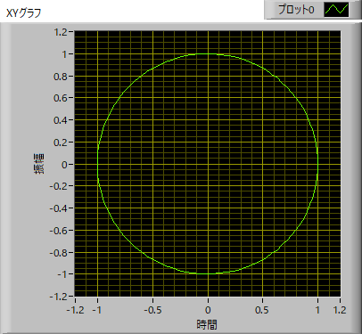
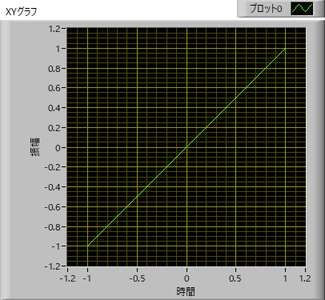
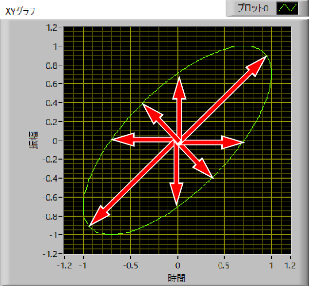
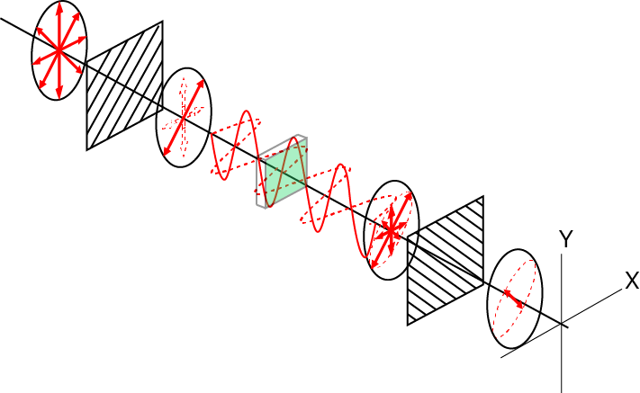

偏光顕微鏡のなぞ-04
位相が異なったら？
X,Y，それぞれの波形の位相をδx，δy，とすれば，
\(\Large E_x (z,t) = E_{0x} \ cos (kz - \omega t + \delta_x) \)
\(\Large E_y (z,t) = E_{0y} \ cos (kz - \omega t + \delta_y) \)
ここで，簡単に，z=0, E0x=E0y=1，δx=0，δy=π/2，とすれば，
\(\Large E_x (0,t) = cos ( - \omega t) \)
\(\Large E_y (0,t) = cos ( - \omega t + \frac{\pi}{2}) \)
\(\Large \begin{eqnarray} tan \theta &=&
\frac{y}{x} \\
&=& \frac{cos ( - \omega t + \frac{\pi}{2})}{cos ( - \omega t)} \\
&=& \frac{-sin ( - \omega t )}{cos ( - \omega t)} \\
&=& tan ( \omega t ) \\
\end{eqnarray} \)
\(\Large \theta = \omega t \)
となり，角度が時間とともに変化することがわかります．
また，
\(\Large E_x (0,t)^2 +E_y (0,t)^2 = cos^2 ( - \omega t) +sin^2 ( - \omega t) = 1 \)
となり，偏光面が円運動することがわかります．
このことを，円偏光，と呼びます．
XY平面でプロットすると，

となります．
ここで，簡単に，z=0, E0x=E0y=1，δx=0，δy=0，とすれば，

となり，直線偏光になります．
z=0, E0x=E0y=1，δx=0，δy=π/4，とすれば，
となり，楕円偏光，となります．
つまり，変更面の時間変化を見ると，

となり，直線偏光の場合に比べて，垂直成分が発生することになります．
つまり，クロスニコル状態でも光が透過することになります．

つまり．．．．複屈折を有する生体試料を偏光顕微鏡で観察できるのは．．．
偏光面が回転しているわけではなく，
直線偏光が楕円変更になり，
クロスニコル状態でも光が透過する
と考えて良さそうです．
これが真実かどうかは．．．．わかりませんが．．．．．一応複屈折の定義から説明できそうです．
では，次にどの程度光が透過するかを考えていきましょう．